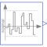

TruncatedNormalNoiseNoise generator with truncated normal distribution |

|
Information
This information is part of the Modelica Standard Library maintained by the Modelica Association.
A summary of the common properties of the noise blocks is provided in the documentation of package Blocks.Noise. This TruncatedNormalNoise block generates reproducible, random noise at its output according to a truncated normal distribution. This means that normally distributed random values are truncated to the band y_min ... y_max. Measurement noise has often this distribution form. By default, the standard parameters of the truncated normal distribution are derived from y_min ... y_max:
mean value = (y_max + y_min)/2,
standard deviation = (y_max - y_min)/6 (= 99.7 % of the non-truncated normal distribution are within y_min ... y_max).
For an example see NoiseExamples.Distributions. By default, two or more instances produce different, uncorrelated noise at the same time instant. The block can only be used if on the same or a higher hierarchical level, model Blocks.Noise.GlobalSeed is dragged to provide global settings for all instances.
Parameters (12)
| samplePeriod |
Value: Type: Period (s) Description: Period for sampling the raw random numbers |
|---|---|
| enableNoise |
Value: globalSeed.enableNoise Type: Boolean Description: =true: y = noise, otherwise y = y_off |
| y_off |
Value: 0.0 Type: Real Description: y = y_off if enableNoise=false (or time |
| useGlobalSeed |
Value: true Type: Boolean Description: = true: use global seed, otherwise ignore it |
| useAutomaticLocalSeed |
Value: true Type: Boolean Description: = true: use automatic local seed, otherwise use fixedLocalSeed |
| fixedLocalSeed |
Value: 1 Type: Integer Description: Local seed (any Integer number) |
| startTime |
Value: 0.0 Type: Time (s) Description: Start time for sampling the raw random numbers |
| localSeed |
Value: Type: Integer Description: The actual localSeed |
| y_min |
Value: Type: Real Description: Lower limit of y |
| y_max |
Value: Type: Real Description: Upper limit of y |
| mu |
Value: (y_max + y_min) / 2 Type: Real Description: Expectation (mean) value of the normal distribution |
| sigma |
Value: (y_max - y_min) / 6 Type: Real Description: Standard deviation of the normal distribution |
Connectors (1)
| y |
Type: RealOutput Description: Connector of Real output signal |
|---|
Components (1)
| globalSeed |
Type: GlobalSeed Description: Definition of global seed via inner/outer |
|---|
Used in Examples (1)
|
Modelica.Blocks.Examples.NoiseExamples Demonstrates noise with different types of distributions |